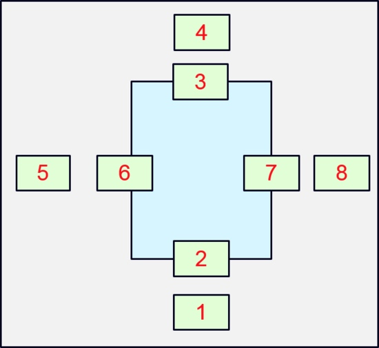

jQuery懒加载插件
懒加载原理

JQuery 插件
(function($) {
$.fn.scrollLoading = function(options) {
var defaults = {
// 在html标签中存放的属性名称；
attr: "data-url",
// 父元素默认为window
container: window,
callback: $.noop
};
// 不管有没有传入参数，先合并再说；
var params = $.extend({}, defaults, options || {});
// 把父元素转为jquery对象；
var container = $(params.container);
// 新建一个数组，然后调用each方法，用于存储每个dom对象相关的数据；
params.cache = [];
$(this).each(function() {
// 取出jquery对象中每个dom对象的节点类型，取出每个dom对象上设置的图片路径
var node = this.nodeName.toLowerCase(), url = $(this).attr(params["attr"]);
//重组，把每个dom对象上的属性存为一个对象；
var data = {
obj: $(this),
tag: node,
url: url
};
// 把这个对象加到一个数组中；
params.cache.push(data);
});
var callback = function(call) {
if ($.isFunction(params.callback)) {
params.callback.call(call);
}
};
//每次触发滚动事件时，对每个dom元素与container元素进行位置判断，如果满足条件，就把路径赋予这个dom元素！
var loading = function() {
// 获取父元素的高度
var contHeight = container.outerHeight();
var contWidth = container.outerWidth();
// 获取父元素相对于文档页顶部的距离，这边要注意了，分为以下两种情况；
if (container.get(0) === window) {
// 第一种情况父元素为window，获取浏览器滚动条已滚动的距离；$(window)没有offset()方法；
var contop = $(window).scrollTop();
var conleft = $(window).scrollLeft();
} else {
// 第二种情况父元素为非window元素，获取它的滚动条滚动的距离；
var contop = container.offset().top;
var conleft = container.offset().left;
}
$.each(params.cache, function(i, data) {
var o = data.obj, tag = data.tag, url = data.url, post, posb, posl, posr;
if (o) {
//对象顶部与文档顶部之间的距离，如果它小于父元素底部与文档顶部的距离，则说明垂直方向上已经进入可视区域了；
post = o.offset().top - (contop + contHeight);
//对象底部与文档顶部之间的距离，如果它大于父元素顶部与文档顶部的距离，则说明垂直方向上已经进入可视区域了；
posb = o.offset().top + o.height() - contop;
// 水平方向上同理；
posl = o.offset().left - (conleft + contWidth);
posr = o.offset().left + o.width() - conleft;
// 只有当这个对象是可视的，并且这四个条件都满足时，才能给这个对象赋予图片路径；
if ( o.is(':visible') && (post < 0 && posb > 0) && (posl < 0 && posr > 0) ) {
if (url) {
//在浏览器窗口内
if (tag === "img") {
//设置图片src
callback(o.attr("src", url));
} else {
// 设置除img之外元素的背景url
callback(o.css("background-image", "url("+ url +")"));
}
} else {
// 无地址，直接触发回调
callback(o);
}
// 给对象设置完图片路径之后，把params.cache中的对象给清除掉；对象再进入可视区，就不再进行重复设置了；
data.obj = null;
}
}
});
};
//加载完毕即执行
loading();
//滚动执行
container.bind("scroll", loading);
};
})(jQuery);
使用prototype
<!DOCTYPE html>
<html>
<head>
<script src="http://kejian.jirengu.com/static/js/jquery-1.11.1.min.js"></script>
<meta charset="utf-8">
<title>图片懒加载-简单</title>
<style>
ul,li{
list-style:none;
}
.container{
max-width: 800px;
margin: 0 auto;
}
.container:after{
content: '';
display: block;
clear: both;
}
.container li{
float: left;
margin: 10px 10px;
}
.container li img{
width: 380px;
height: 380px;
}
p{
float: left;
}
</style>
</head>
<body>
<ul class="container">
<li><a href="#"><img src="http://kejian.jirengu.com/data/fe/%E8%AF%BE%E4%BB%B6/32-%E6%87%92%E5%8A%A0%E8%BD%BD/code/blank.jpg" data-src="http://cdn.jirengu.com/book.jirengu.com/img/1.jpg" /></a></li>
<li><a href="#"><img src="http://kejian.jirengu.com/data/fe/%E8%AF%BE%E4%BB%B6/32-%E6%87%92%E5%8A%A0%E8%BD%BD/code/blank.jpg" data-src="http://cdn.jirengu.com/book.jirengu.com/img/1.jpg" /></a></li>
<li><a href="#"><img src="http://kejian.jirengu.com/data/fe/%E8%AF%BE%E4%BB%B6/32-%E6%87%92%E5%8A%A0%E8%BD%BD/code/blank.jpg" data-src="http://cdn.jirengu.com/book.jirengu.com/img/2.jpg" /></a></li>
<li><a href="#"><img src="http://kejian.jirengu.com/data/fe/%E8%AF%BE%E4%BB%B6/32-%E6%87%92%E5%8A%A0%E8%BD%BD/code/blank.jpg" data-src="http://cdn.jirengu.com/book.jirengu.com/img/3.jpg" /></a></li>
<li><a href="#"><img src="http://kejian.jirengu.com/data/fe/%E8%AF%BE%E4%BB%B6/32-%E6%87%92%E5%8A%A0%E8%BD%BD/code/blank.jpg" data-src="http://cdn.jirengu.com/book.jirengu.com/img/4.jpg" /></a></li>
<li><a href="#"><img src="http://kejian.jirengu.com/data/fe/%E8%AF%BE%E4%BB%B6/32-%E6%87%92%E5%8A%A0%E8%BD%BD/code/blank.jpg" data-src="http://cdn.jirengu.com/book.jirengu.com/img/5.jpg" /></a></li>
<li><a href="#"><img src="http://kejian.jirengu.com/data/fe/%E8%AF%BE%E4%BB%B6/32-%E6%87%92%E5%8A%A0%E8%BD%BD/code/blank.jpg" data-src="http://cdn.jirengu.com/book.jirengu.com/img/6.jpg" /></a></li>
<li><a href="#"><img src="http://kejian.jirengu.com/data/fe/%E8%AF%BE%E4%BB%B6/32-%E6%87%92%E5%8A%A0%E8%BD%BD/code/blank.jpg" data-src="http://cdn.jirengu.com/book.jirengu.com/img/7.jpg" /></a></li>
<li><a href="#"><img src="http://kejian.jirengu.com/data/fe/%E8%AF%BE%E4%BB%B6/32-%E6%87%92%E5%8A%A0%E8%BD%BD/code/blank.jpg" data-src="http://cdn.jirengu.com/book.jirengu.com/img/8.jpg" /></a></li>
<li><a href="#"><img src="http://kejian.jirengu.com/data/fe/%E8%AF%BE%E4%BB%B6/32-%E6%87%92%E5%8A%A0%E8%BD%BD/code/blank.jpg" data-src="http://cdn.jirengu.com/book.jirengu.com/img/9.jpg" /></a></li>
<li><a href="#"><img src="http://kejian.jirengu.com/data/fe/%E8%AF%BE%E4%BB%B6/32-%E6%87%92%E5%8A%A0%E8%BD%BD/code/blank.jpg" data-src="http://cdn.jirengu.com/book.jirengu.com/img/10.jpg" /></a></li>
<li><a href="#"><img src="http://kejian.jirengu.com/data/fe/%E8%AF%BE%E4%BB%B6/32-%E6%87%92%E5%8A%A0%E8%BD%BD/code/blank.jpg" data-src="http://cdn.jirengu.com/book.jirengu.com/img/11.jpg" /></a></li>
<li><a href="#"><img src="http://kejian.jirengu.com/data/fe/%E8%AF%BE%E4%BB%B6/32-%E6%87%92%E5%8A%A0%E8%BD%BD/code/blank.jpg" data-src="http://cdn.jirengu.com/book.jirengu.com/img/12.jpg" /></a></li>
<li><a href="#"><img src="http://kejian.jirengu.com/data/fe/%E8%AF%BE%E4%BB%B6/32-%E6%87%92%E5%8A%A0%E8%BD%BD/code/blank.jpg" data-src="http://cdn.jirengu.com/book.jirengu.com/img/13.jpg" /></a></li>
<li><a href="#"><img src="http://kejian.jirengu.com/data/fe/%E8%AF%BE%E4%BB%B6/32-%E6%87%92%E5%8A%A0%E8%BD%BD/code/blank.jpg" data-src="http://cdn.jirengu.com/book.jirengu.com/img/14.jpg" /></a></li>
<li><a href="#"><img src="http://kejian.jirengu.com/data/fe/%E8%AF%BE%E4%BB%B6/32-%E6%87%92%E5%8A%A0%E8%BD%BD/code/blank.jpg" data-src="http://cdn.jirengu.com/book.jirengu.com/img/15.jpg" /></a></li>
<li><a href="#"><img src="http://kejian.jirengu.com/data/fe/%E8%AF%BE%E4%BB%B6/32-%E6%87%92%E5%8A%A0%E8%BD%BD/code/blank.jpg" data-src="http://cdn.jirengu.com/book.jirengu.com/img/16.jpg" /></a></li><li><a href="#"><img src="http://kejian.jirengu.com/data/fe/%E8%AF%BE%E4%BB%B6/32-%E6%87%92%E5%8A%A0%E8%BD%BD/code/blank.jpg" data-src="http://cdn.jirengu.com/book.jirengu.com/img/17.jpg" /></a></li>
<p id="hello">hello</p>
<p id="world">world</p>
</ul>
<script type="text/javascript">
function Exposure($target,callback) {
this.$target = $target;
this.callback = callback;
this.bind();
this.check();
}
Exposure.prototype.bind = function () {
var _this = this;
$(window).on('scroll',function () {
_this.check();
})
}
Exposure.prototype.check = function () {
if (this.isShow(this.$target)) {
}
}
Exposure.prototype.isShow = function () {
var windowHeight = $(window).height(),
scrollTop = $(window).scrollTop(),
offsetTop = this.$target.offset().top,
nodeHeight = this.$target.height();
if (offsetTop < windowHeight+scrollTop && offsetTop+nodeHeight>scrollTop) {
return true;
} else {
return false;
}
}
var Lazy = (function () {
return {
init: function ($target, callback) {
$target.each(function (idx, target) {
new Exposure($(target),callback);
})
}
}
})()
Lazy.init($('#hello'),function ($node) {
$node.text($node.text()+'123');
})
Lazy.init($('#world'),function ($node) {
$node.text($node.text()+'456');
})
Lazy.init($('.container img'), function($node){
showImg($node);
});
function showImg($img){
var imgUrl = $img.attr('data-src');
$img.attr('src', imgUrl);
}
</script>
</body>
</html>